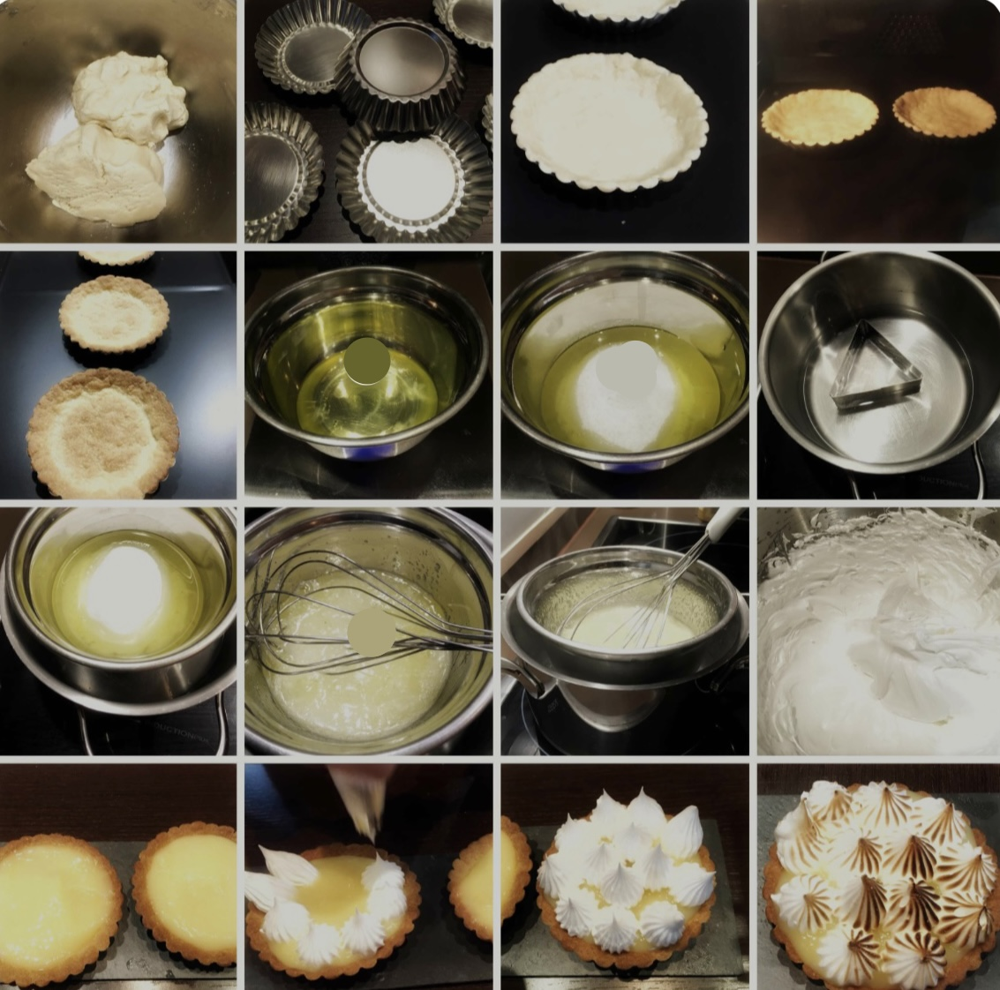

Receta para Lemon Pie
El Lemon Pie es.....

Ingredientes
- Harina 0000 260 gr
- Azúcar impalpable 45 gr
- Manteca pomada 125 gr
- 1 huevo
Paso a paso
- Mezclamos en un bol el queso y el dulce de leche hasta conseguir una crema homogénea. Tapar y poner en la heladera.
- Mojar galletitas de a una en café tibio y colocar lado a lado en un molde rectangular o cuadrado.
- Luego de completar una capa de galletitas, untar una capa con parte de la mezcla de queso y dulce de leche.
- Agregar una nueva capa de galletitas mojadas en café y luego volver a cubrir con mezcla de queso y dulce de leche hasta agotar galletitas y mezcla.
- Para decorar, agregar una capa de crema de leche batida y adornar con virutas de chocolate o espolvorear cacao.
- Llevar a heladera la mayor cantidad de horas antes de consumir. Idealmente, de un día para otro.

Para tener en cuenta
- Al café puede agregarse un poco de bebida alcohólica como whisky para cortar el dulzor.
- En lugar de café puede usarse leche chocolatada.
- En la mezcla del relleno, en lugar de queso puede usarse crema. Resultará un relleno más ligero pero quizás demasiado dulce.
- De cuánto remojen las galletitas dependerá la consistencia de la torta. Más mojadas, más tierna. Menos mojadas, más seca resultará.